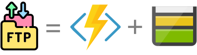
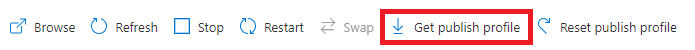

L'astuce FinOps : Un serveur FTPS Low Cost
Important
This article written in French will be translated into English in the next few days. stay tuned ;-).
Il arrive encore que des clients souhaitent utiliser le protocole FTP(S) pour transmettre des fichiers sur Azure. Vous aurez beau chercher sur le marketplace Azure, Microsoft ne propose pas nativement ce service en managé. Il vous reste donc 2 options :
- Se créer son propre serveur FTP à partir d'une VM ou d'une ACI (à tester).
- Passer par un tiers qui vous mettra à disposition ce service.
Cela nécessitera dans tous les cas un coût non négligeable pour un service très basique. N'y a-t-il pas une autre solution ?
J'ai une solution !
Je vais certainement faire hurler tous les puristes, mais il s'avère que cette solution à fait ses preuves et fonctionne parfaitement chez les clients depuis plus de 2 ans. Il suffit d'utiliser 2 services managés Azure : Une FunctionApp + Un StorageAccount.

Une solution : Une FunctionApp en tant que serveur FTP(S).
Pour déployer votre code source sur vos FunctionApp, vous avez plusieurs possibilités. L'un d'elle utilise un service FTP(S). L'idée est donc de réutiliser ce service de la FunctionApp pour en faire la fonctionnalité principale.
Pour cela rien de plus simple, il faut :
- Créer une FunctionApp avec un service plan "Free" (Sku : Y1),
- Créer un StorageAccount (si vous n'en avez pas déjà) qui sera votre espace de stockage,
- Configurer votre FunctionApp pour utiliser le StorageAccount. Il faut ajouter les paramètres suivant dans la section Application Settings :
{
"name": "AzureWebJobsDashboard",
"value": "[Endpoint StorageAccount]",
"slotSetting": false
},
{
"name": "AzureWebJobsStorage",
"value": "[Endpoint StorageAccount]",
"slotSetting": false
},
{
"name": "WEBSITE_CONTENTAZUREFILECONNECTIONSTRING",
"value": "[Endpoint StorageAccount]",
"slotSetting": false
},
{
"name": "WEBSITE_CONTENTSHARE",
"value": "MyFtpsLowCost",
"slotSetting": false
},

Enfin, il faudra activer les éléments de sécurité (ça reste un préconisation) en :
- Autorisant uniquement le FTPS.
- Activant la restriction d'IP et de Vnet.
Conclusion
Certe cette solution ne permet pas de gérer plusieurs compte d'accès. Si vous avez plusieurs partenaires souhaitant utiliser un service FTP pour consommer ou transmettre des fichiers, vous devrez multiplier les FunctionApp.
Mais ce qu'il faut retenir, c'est que :
- d'une part, ce service ne vous coutera rien ou presque rien (juste les coûts du StorageAccount).
- d'autre part, ce sera l'occasion d'inciter vos partenaires à changer de méthode pour consommer ou pousser des fichiers (API Rest,...).
Note
Dans mon exemple j'utilise une FunctionApp mais cela fonctionne tout aussi bien avec un WebApp.
Références
Remerciements
- Laurent Mondeil : pour la relecture
Rédigé par Philippe MORISSEAU, Publié le 04 Novembre 2020